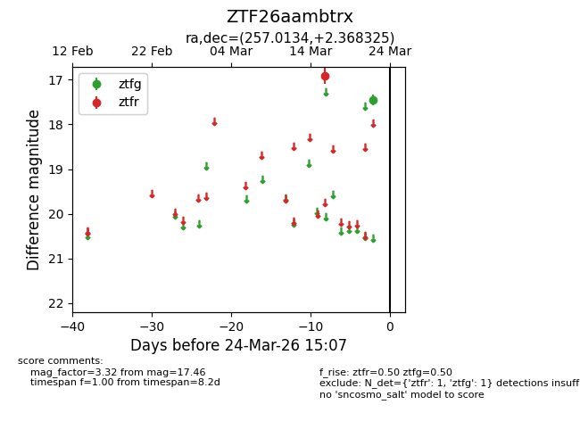
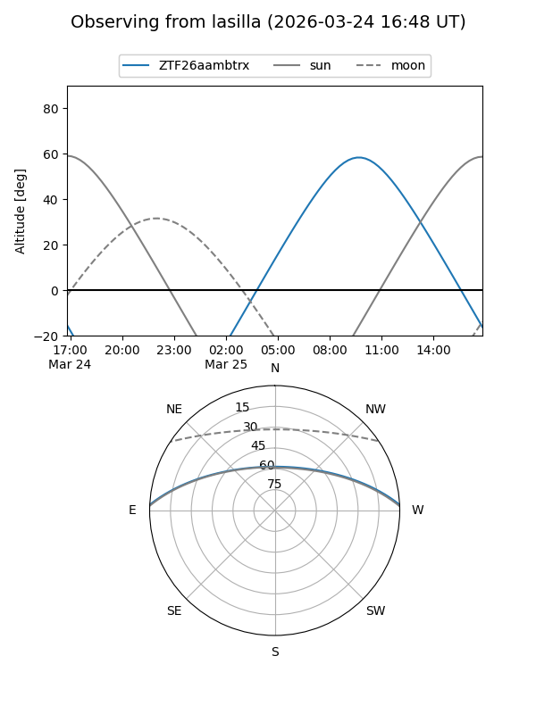
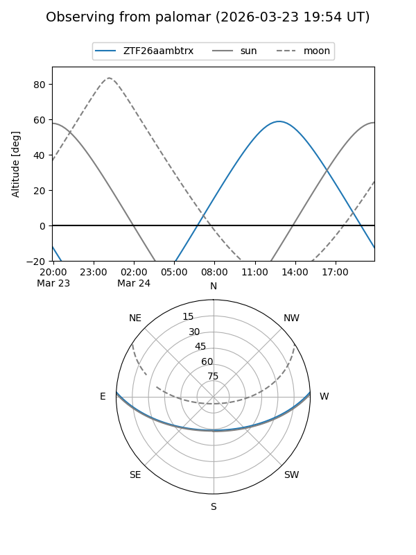

ZTF26aambtrx
Target ZTF26aambtrx at 2026-03-24 15:10
Aliases and brokers:
FINK: link
Lasair: link
ALeRCE: link
alt names
ZTF26aambtrx (ztf,fink_ztf)
Coordinates:
equatorial (ra, dec) = 257.0134,+2.36832
equatorial (HMS+DMS) = 17:08:03.22,+02:22:05.97
galactic (l, b) = (22.7289,+23.98551)
Flags:
Photometry:
last ztfg=17.46, ztfr=16.91
1 ztfg, 1 ztfr detections
Lightcurve

Visibility


Additional plots